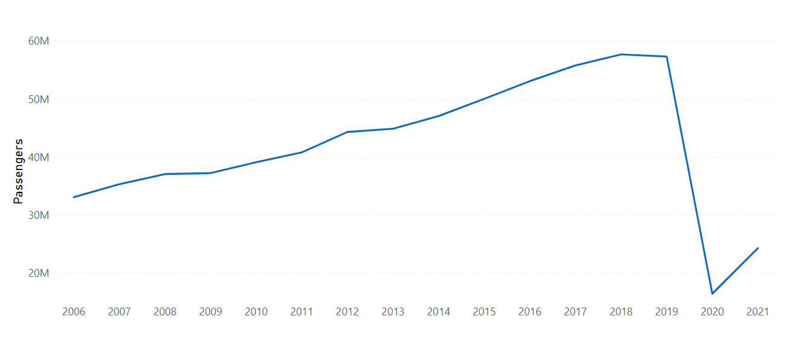
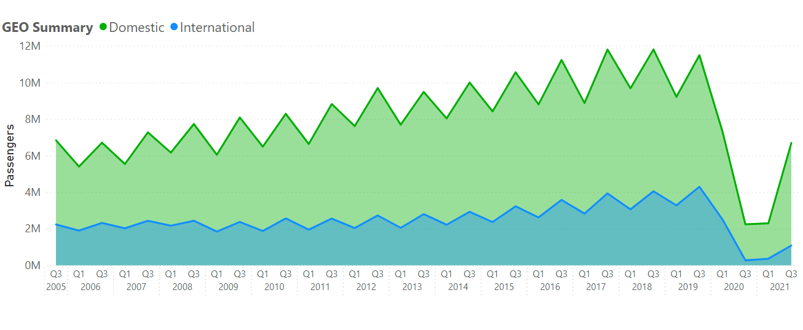
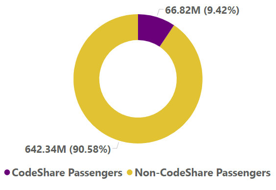
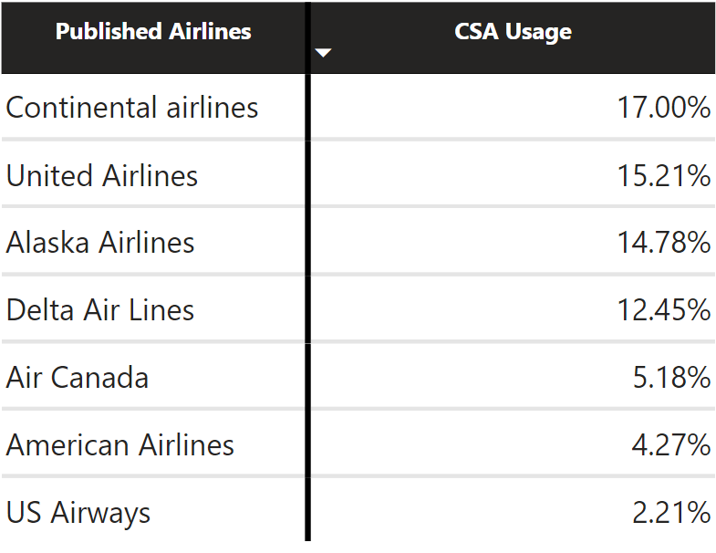
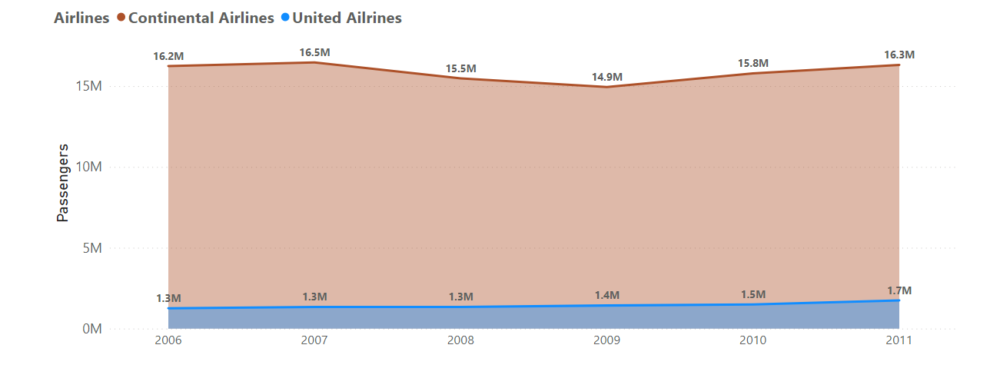
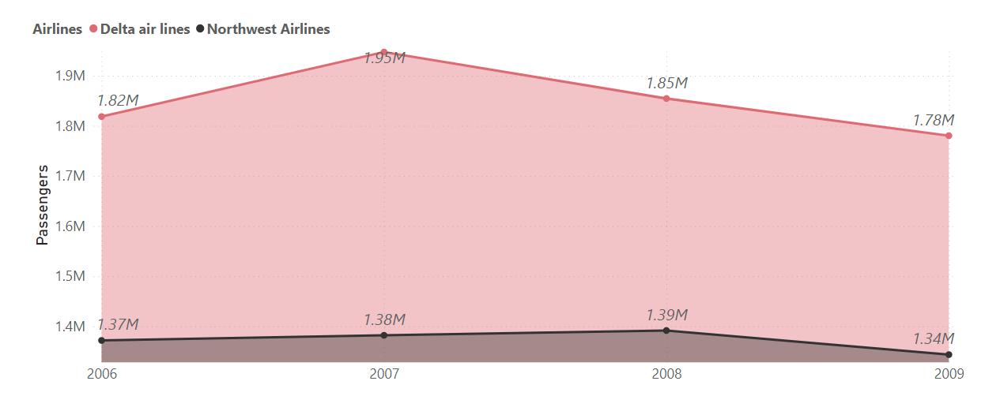
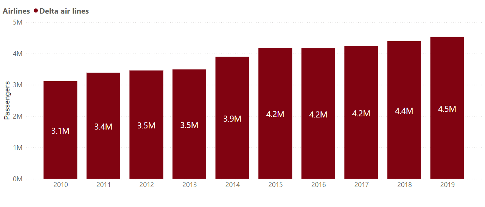

OBJECTIVES:
- Analyzing the historical changes in passenger numbers.
- Investigating the passenger demographics, distinguishing between domestic and international travelers.
- Determining the airlines with the highest passenger counts.
- Analyzing any potential partnerships that have been established.
Data Collection and Preparation:
The dataset was obtained from the data.Sf website where they continually update their records with new data. The version used for this project includes the time period from July 2005 to June 2022. The dataset consists of some important variables, such as Activity Period, which refers to the reporting month, Passenger Count and information on published and operating airlines.
In the data preparation phase, great care was taken during data cleaning. This entailed renaming of operating and published airlines names, eradication of useless records, and standardizing the activity period towards time-based analysis. By following these steps, a more reliable and accurate dataset could be used for further analysis.
The SQL Server code lines for both the data cleaning and data exploration processes are available on my Git Hub.
Exploratory Data Analysis:
Unveiling the Progression of Passenger Numbers at San Francisco Airport Throughout the Years
The line graph reveals discernible patterns across different time spans. Starting from 2006 to 2012, a prevailing upward trajectory is evident, except for 2008 and 2009 when growth stagnated, likely due to the repercussions of the 2008 crisis. Shifting focus to the interval between 2013 and 2018, a consistent upward pattern is observable, signifying a steady upsurge in passenger figures. However, in 2020, there is a significant dip, signifying a sharp decrease in passenger numbers, coinciding with the emergence of the COVID-19 pandemic. Towards the close of 2020, a noticeable trend of gradual recovery becomes evident as passenger numbers commence rising once more. To uncover any seasonal variations, an analysis on a quarterly basis will be imperative.
-
Delving into the Analysis of Domestic and International Passengers
Remarkably, we conducted both yearly and quarterly analyses of passenger trends, differentiating between domestic and international travelers. Notably, the majority of passengers, approximately 77%, fall into the domestic category, underscoring the significant weight of domestic travel in the overall passenger count.
A clear seasonality pattern emerges, with passenger numbers consistently peaking in the third quarter. This cyclic feature can be attributed to various factors, such as vacation and holiday travel during specific periods, including summer and holidays.
Notably, in the context of the COVID-19 pandemic's impact, an interesting observation arises: the recovery of domestic passenger numbers has been more promising compared to their international counterparts. This resilience can be attributed to the protocols in place for domestic flights in the United States, which allowed for a quicker recovery process. In contrast, managing international flights during the pandemic has proven challenging due to quarantine rules and travel bans imposed by other countries.
-
Analysis of the Top 12 Airlines Based on Passenger Numbers at San Francisco Airport

Over 99 operating airlines have made flights at San Francisco Airport since 2005. To this end, we have decided to graph the passenger numbers of the 12 leading operating airlines. United Airlines is the leading carrier with approximately 186 million passengers followed by Continental Airlines with 88 million passengers. It is important to note that Continental Airlines merged with United Airlines in 2012. Consequently, the passenger numbers for Continental Airlines span from 2005 to 2012, but they are still very high in comparison to other competitors.
This will give us the best chance to understand the performance of the companies before merger and their subsequent performance. It also fits with the aim of considering partnerships that occurred at San Francisco Airport. The same case applies to the merger that took place between Delta Air Lines and Northwest Airlines in 2010 that can provide more information on the topic.
-
CodeShare Agreement Analysis
 When a passenger purchases a flight ticket from 'X' airline but flies on a plane operated by 'Y' airline, it generally indicates that both 'X' and 'Y' airlines have entered into a codeshare agreement. A codeshare agreement is a business arrangement where two or more airlines collaborate to sell tickets jointly and provide shared flights on specific routes. In this agreement, one airline, referred to as the operating airline, operates the flight, while the other airline, known as the published airline, promotes and sells tickets for that flight using its own airline code.
 I have chosen to analyze published airlines that have sold both CodeShare Agreement (CSA) flight tickets and non-CSA flight tickets. The analysis revealed that Continental Airlines relies on CSA for 17% of their flight ticket sales, while US Airways has the lowest dependency on CSA among the published airlines, with only 2.21% of their total flight tickets sold through this arrangement. Access to relevant data on published airlines selling both CSA and non-CSA flight tickets may enable us to gain valuable insights into the advantages provided by these agreements. Furthermore, it facilitates the identification of potential profitable partnerships within the aviation industry
-
Analysing the impcat of airlines merging
In pursuit of one of the project's objectives, which is the identification of partnerships, we have opted to analyze the repercussions of airline mergers. This analysis will concentrate on a range of factors, such as the total number of passengers, average annual passengers, and an assessment of the success of the merged airlines using a basic benchmark. Our objective in scrutinizing these metrics is to acquire insights that will enable us to evaluate the performance of the merged airlines effectively.
The proposed basic benchmark involves comparing the weighted annual average passenger count of the two airlines before their merger with the average annual passenger count of the merged airline after the merger. This straightforward approach provides a clear and intuitive point of reference. However, it oversimplifies the complexities of airline mergers by not accounting for factors such as operational changes, cost savings, and external influences like industry shifts and economic conditions. It offers a simple starting point for assessing the merger's success but should be used in conjunction with more comprehensive analyses and benchmarks to provide a well-rounded evaluation of the merger's performance.
-
Continental airlines and United Airlines
 Before the merger, Continental Airlines had a significant number of passengers at San Francisco Airport. In fact, the number of Continental Airlines passengers exceeded United Airlines numbers by a factor of ten before the merger. United Airlines had an average of 1.43 million passengers annually, whereas Continental Airlines had an average of 15.86 million passengers annually. We will establish the weighted annual average of 14.61 million passengers as the benchmark for comparison with the post-merge annual average.
 Following the merger, United Airlines successfully achieved over 210.35 million passengers,
including the challenging period of the pandemic. The annual average from 2013 to 2019
stood at 23.55 million passengers.
This figure surpasses the previously proposed benchmark by a factor of 1.61
Following the merger, United Airlines successfully achieved over 210.35 million passengers,
including the challenging period of the pandemic. The annual average from 2013 to 2019
stood at 23.55 million passengers.
This figure surpasses the previously proposed benchmark by a factor of 1.61
-
Delta Air Lines and Northwest Airlines
 Between 2005 and 2010, Delta Air Lines carried a total of 8.6 million passengers, exceeding Northwest Airlines' passenger count by 38%. Furthermore, Delta Air Lines maintained an annual average of 1.85 million passengers, whereas Northwest Airlines averaged 1.36 million passengers per year. As a milestone, it is expected that the merged entity will exceed an annual average of 1.62 million passengers, establishing a benchmark for success.
 After the merger, Delta Air Lines experienced a significant increase in passenger numbers. They recorded a total of 44.19 million passengers, with an annual average of 3.97 million passengers (excluding the period affected by the COVID-19 pandemic). The annual average exceeded the basic benchmark by 2.45 times, highlighting remarkable growth.
Conclusion:
At the conclusion of this project, we successfully achieved our objectives and illuminated the hidden trends at San Francisco International Airport. Our analysis encompassed the evolution of passenger numbers, the mix of domestic and international travelers, as well as an examination of the top-performing airlines and established partnerships.
We also emphasize the potential for improving this project by acquiring proper data, including information on codeshare agreements for a more comprehensive assessment, and data related to key performance indicators (KPIs) of merged airlines for a more accurate evaluation of merger success.
This project serves as a valuable entry point for gaining a deeper understanding of airline and airport operations. Moreover, it encourages the initiation of additional projects aimed at addressing the gaps and unanswered questions left by this endeavor.